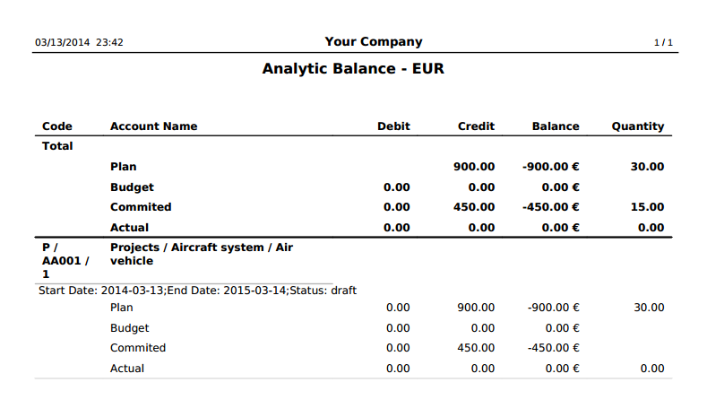

The aim is to enable the project manager can see at all times the relationship between the planned and actual cost of the project.
The following reports are defined:
Resource usage analysis: For each analytical account associated (taking into account the child accounts) breaks down the following information: Analytical Account Code, Analytical Account Name, Planned Cost, Current Actual Cost
Resource Usage Dashboard:

Resource usage (amounts): Provides a chart view of the resource usage per analytic account, based on amounts.
Resource usage (quantities): Provides a chart view of the resource usage per analytic account, based on quantities.
Resource usage analysis by product: For each analytical account and product associated (taking into account the child accounts) breaks down the following information: Analytical Account Code, Analytical Account Name, Planned Cost, Actual Cost
Resource usage by product (amounts): Provides a chart view of the resource usage per analytic account and product, based on amounts.
Resource usage by product (quantities): Provides a chart view of the resource usage per analytic account and product, based on quantities.
The following PDF forms are defined:
Analytic Planning Balance: Provides the total credit, debit, balance and quantiy for the planned, and actual costs and revenues.
Analytic Planning Balance:
More information and assistance
If you are interested in this module and seek further assistance to use it please visit us at www.eficent.com or conact us at contact@eficent.com.